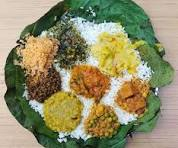
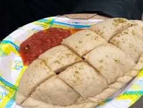
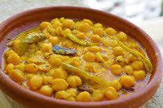
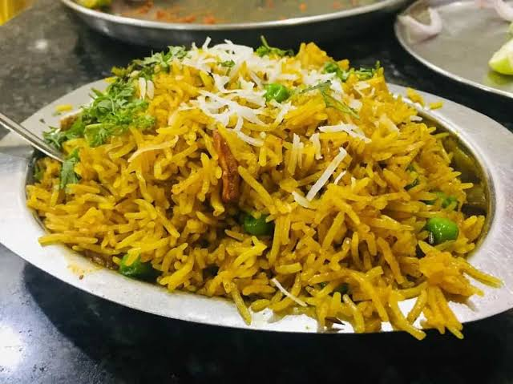
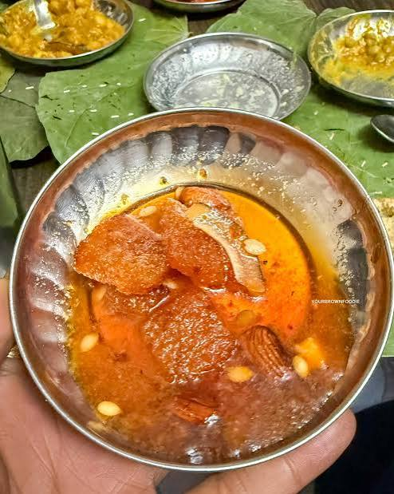
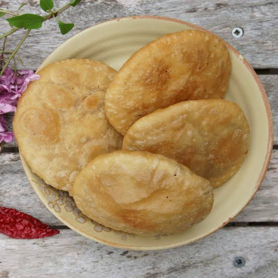
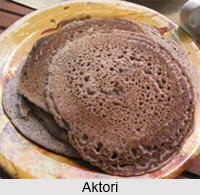

Dham is a traditional food of Himachal Pradesh. It is usually served during festivals and special occasions.

Siddu is a traditional steamed food made from wheat flour.

Chana Madra is a popular Himachali dish made with chickpeas.

Tudkiya Bhath is a traditional rice dish of Himachal Pradesh.

Chha Gosht is a traditional, festive non-vegetarian specialty
from the hills of Himachal Pradesh (particularly associated with Chamba)

Mittha (also called Mitha Bhaat or Meetha Chawal) is a traditional sweet dish from Himachal Pradesh.

Babru is a traditional and iconic deep-fried flatbread or snack
from Himachal Pradesh, often compared to a Himachali version of a kachori or sweet puri.

Aktori is a traditional sweet pancake from the Lahaul-Spiti and cold desert valleys of Himachal Pradesh.